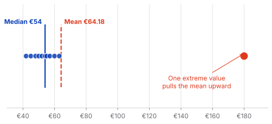
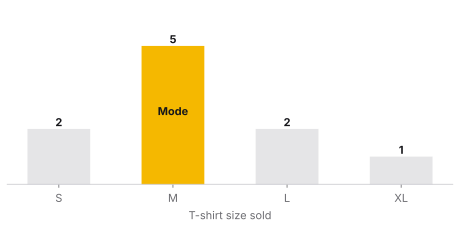
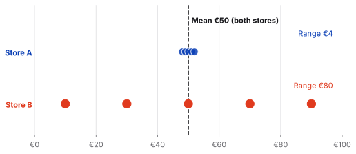
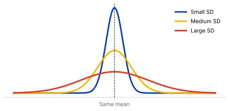
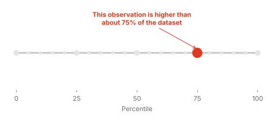
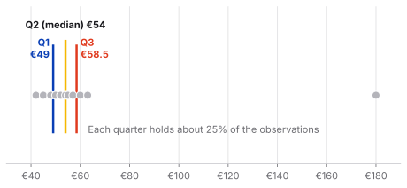
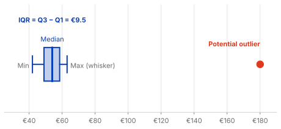
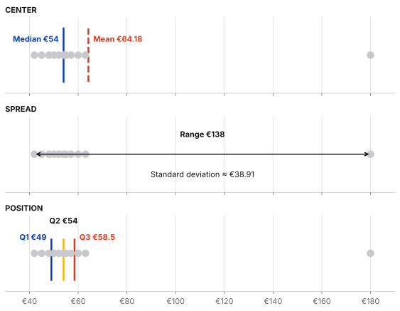

Describing data
Descriptive Statistics
How to read the story hidden in data
Slide deck 16 slides · the same story, ready to present
Why descriptive statistics matter
Before any model, forecast, or dashboard, someone has to understand what the data actually looks like. Descriptive statistics are that first step: they summarize a dataset in a few numbers, so we can see its shape before we draw conclusions.
- They make large datasets readable. A few measures can stand in for thousands of rows.
- They stop us from trusting a single number. A mean of €64.18 hides that most customers spend between €40 and €60, and two stores can share a mean of €50 while behaving very differently.
- They reveal unusual observations. A value like €180 stands out once we look at quartiles and box plots, and it raises the right question: is it an error or a real customer?
- They prepare everything that follows. Choosing the right chart, model, or business conclusion depends on first knowing the center, spread, and position of the data.
1. Measures of Central Tendency
Central tendency describes where the data is concentrated. The three classic measures are the mean, median, and mode. They answer similar questions from different perspectives.
Mean — the mathematical average
The mean is calculated by adding all observations and dividing by the number of observations.
x̄ = Σxᵢ / n
Example: monthly customer spending = €42, €45, €48, €50, €52, €54, €55, €57, €60, €63, €180.
Mean = €64.18.

Analytical lesson
The mean uses every observation, so it is sensitive to extreme values and skewed distributions.
Median — the middle of the data
Order the observations and find the middle value. With an even number of observations, average the two middle values.
For the same spending data, the median is €54.
Why it matters
Most customers in this example spend around €40–€60, while one customer spends €180. The median remains close to the typical customer.
Use it when
The distribution is skewed or contains meaningful outliers—for example, house prices, salaries, or customer spending.
Mode — what happens most often
The mode is the most frequently occurring value. A dataset can have no mode, one mode, or multiple modes.
Example: T-shirt sizes sold = S, M, M, L, M, XL, L, M, S, M. The mode is M.

Especially useful for
Categorical data, where an average may not make sense. For example, the most common payment method can be Credit Card.
Mean, median or mode?
| Situation | Useful measure |
|---|---|
| Numeric, relatively symmetric data | Mean |
| Numeric data with outliers | Median |
| Skewed distributions | Median |
| Categorical data | Mode |
| Most common category | Mode |
2. Measures of Dispersion
Knowing the center is not enough. Two datasets can have the same mean and completely different levels of variability.
Store A: €48, €49, €50, €51, €52
Store B: €10, €30, €50, €70, €90
Both have a mean of €50—but Store B is much more spread out.

Key idea
Central tendency tells us where the data is. Dispersion tells us how much the observations vary.
Range — the simplest measure of spread
Range = maximum − minimum
Store A: €52 − €48 = €4. Store B: €90 − €10 = €80.
Limitation
The range depends only on the minimum and maximum, so a single extreme observation can change it dramatically.
Variance — average squared distance from the mean
Variance measures how far observations are from the mean by calculating their squared deviations and averaging them.
Sample variance: s² = Σ(xᵢ − x̄)² / (n − 1)
Squaring prevents positive and negative deviations from cancelling each other out.
Standard deviation — spread in the original unit
Standard deviation is the square root of variance. It is often easier to interpret because it returns to the original unit of measurement.
Example dataset: 2, 3, 10.
Mean = 5. Squared deviations = 9, 4, 25. Sample variance = 19. Standard deviation ≈ 4.36.

Business example: rental prices
Two neighborhoods may have similar average rents but very different variability. A neighborhood with a larger standard deviation has a wider spread of rental prices, which can matter when assessing price predictability.
3. Measures of Position
Measures of position tell us where an observation sits relative to the rest of the dataset.
Percentiles
Percentiles divide ordered data into 100 parts. A value at the 75th percentile is higher than approximately 75% of observations in the reference dataset.

Important distinction
The 75th percentile does not mean 75% correct. It describes relative position, not the percentage of points achieved.
Quartiles
Quartiles divide the ordered dataset into four parts. Q1 is the 25th percentile, Q2 is the 50th percentile (the median), and Q3 is the 75th percentile.
Q1 = 25th percentile | Q2 = median | Q3 = 75th percentile

Interquartile Range (IQR)
IQR = Q3 − Q1
If Q1 = €35 and Q3 = €78, then IQR = €43. The middle 50% of observations occupy a €43-wide interval.
Why it matters
The IQR is less sensitive to extreme values than the full range, making it useful for skewed data and outlier analysis.
Five-number summary
The five-number summary consists of the minimum, Q1, median, Q3, and maximum.
Minimum → Q1 → Median → Q3 → Maximum
It can be shown as a box plot: the box represents the middle 50%, the line inside the box is the median, and whiskers show the remaining distribution according to the chosen box-plot convention.

4. Putting Everything Together
The real value of descriptive statistics appears when we use several measures together instead of treating each formula as an isolated calculation.
Customer spending: 42, 45, 48, 50, 52, 54, 55, 57, 60, 63, 180
| Question | Measure | What it tells us |
|---|---|---|
| Where is the center? | Mean / Median | Typical level and sensitivity to extreme values |
| What occurs most often? | Mode | Most common value or category |
| How much does it vary? | Range / Variance / SD | Overall and typical spread |
| Where does an observation sit? | Percentile / Quartile | Relative position |
| What is the middle 50%? | IQR | Robust measure of spread |
| Are there unusual observations? | IQR / Box plot | Potential outliers and distribution shape |
The visual story
A useful way to remember descriptive statistics is as a sequence of analytical questions:
- CENTER → Mean, Median, Mode
- SPREAD → Range, Variance, Standard Deviation
- POSITION → Percentiles, Quartiles, IQR
- DISTRIBUTION → Box plot and other visualizations

Final takeaway
Descriptive statistics are not just numbers to calculate. They are different lenses for looking at the same data. The mean and median tell us where the data is centered. Range and standard deviation tell us how much it varies. Percentiles and quartiles tell us where observations sit within the distribution. Together, they turn a collection of numbers into something we can interpret.